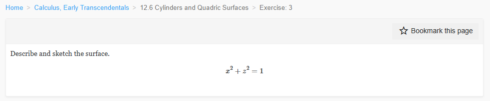
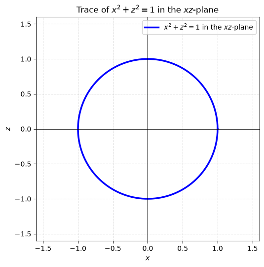
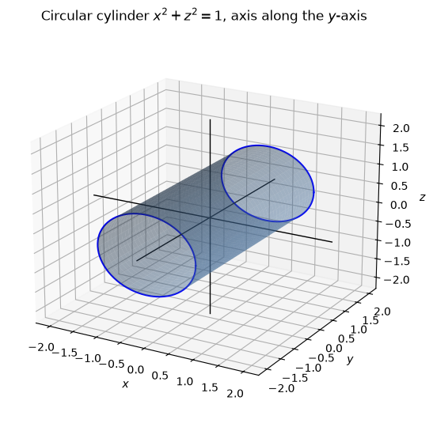
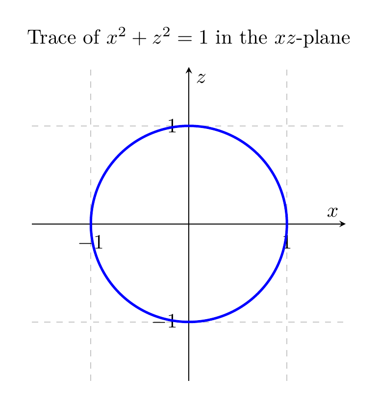
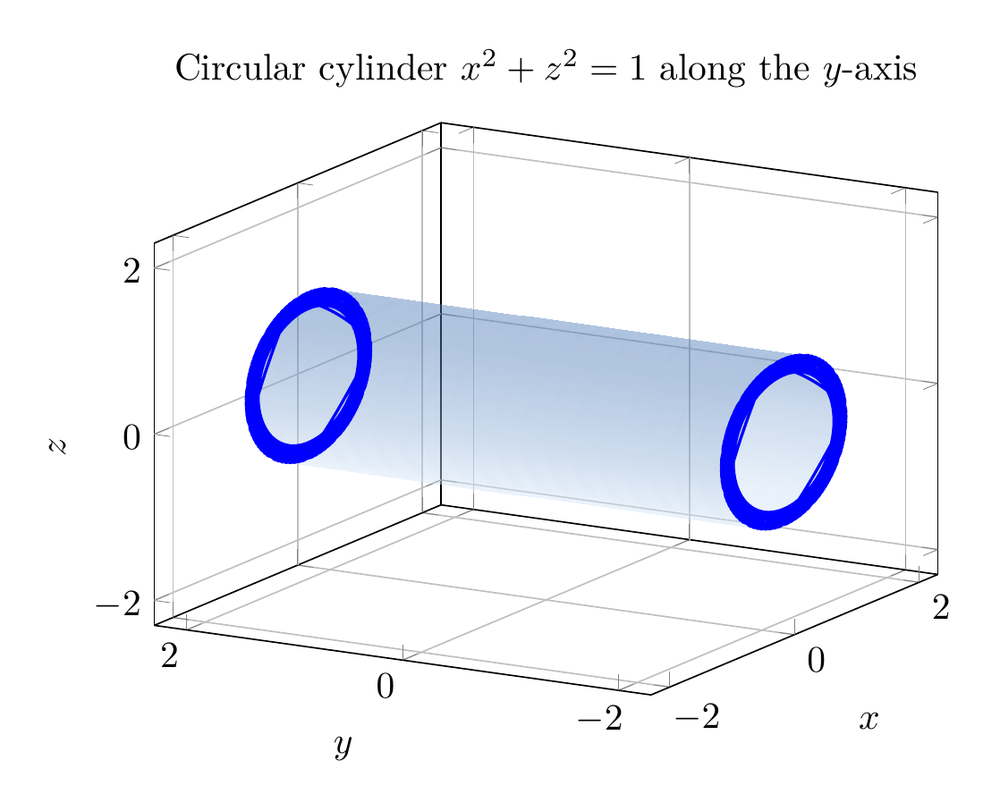

Path: mcma-Nex-N2-Pro/calculus-12.6.3/chat_20260824_171908_727449_utc_0800
Problem
Please solve the math problem in the image.

End of problem
Answer
The equation is
$$
x^2+z^2=1.
$$
Since the variable $y$ does not appear, the condition only restricts $x$ and $z$. In every plane $y=k$, the trace is the same circle
$$
x^2+z^2=1
$$
in the $xz$-plane. Therefore the surface is the lateral surface of a circular cylinder of radius $1$ whose axis is the $y$-axis.
A convenient parameterization is
$$
\mathbf r(\theta,y)=(\cos\theta,\;y,\;\sin\theta),\qquad 0\le \theta<2\pi,\; -\infty

\documentclass[border=10pt]{standalone}
\usepackage{pgfplots}
\pgfplotsset{compat=1.18}
\begin{document}
\begin{tikzpicture}
\begin{axis}[
axis lines=center,
xlabel={$x$},
ylabel={$z$},
axis equal,
grid=both,
grid style={dashed,gray!45},
xmin=-1.6, xmax=1.6,
ymin=-1.6, ymax=1.6,
width=7cm,
height=7cm,
title={Trace of $x^2+z^2=1$ in the $xz$-plane}
]
\addplot[blue, very thick, domain=0:360, samples=200]
({cos(x)}, {sin(x)});
\end{axis}
\end{tikzpicture}
\end{document}

\documentclass[border=10pt]{standalone}
\usepackage{pgfplots}
\pgfplotsset{compat=1.18}
\begin{document}
\begin{tikzpicture}
\begin{axis}[
view={-60}{20},
xlabel={$x$},
ylabel={$y$},
zlabel={$z$},
xmin=-2.3, xmax=2.3,
ymin=-2.3, ymax=2.3,
zmin=-2.3, zmax=2.3,
width=9cm,
height=7cm,
grid=major,
title={Circular cylinder $x^2+z^2=1$ along the $y$-axis}
]
\addplot3[
surf,
shader=interp,
opacity=0.45,
faceted color=white,
colormap={bluegray}{rgb255=(219,235,252) rgb255=(69,117,180)},
domain=0:360,
y domain=-2.2:2.2,
samples=50,
samples y=20
]
({cos(deg(x))}, {y}, {sin(deg(x))});
\addplot3+[domain=0:360, samples=80, smooth, blue, thick, mark=none]
({cos(deg(x))}, {-2.2}, {sin(deg(x))});
\addplot3+[domain=0:360, samples=80, smooth, blue, thick, mark=none]
({cos(deg(x))}, {2.2}, {sin(deg(x))});
\end{axis}
\end{tikzpicture}
\end{document}

End of answer